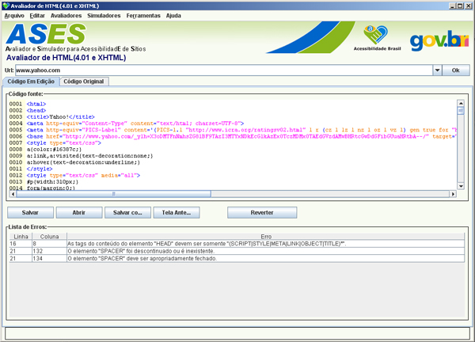

Verifica se a sintaxe do código HTML/XHTML está de acordo com as normas do W3C.
Tipo de Avaliação:
URL: Endereço da página que se deseja avaliar.
Código em Fonte:
Salvar: Salva o arquivo alterado.
Abrir: Abre, e avalia automaticamente, o arquivo HTML.
Salvar Como:Salva o arquivo alterado com um nome diferente do original.
Tela Anterior: Retorna à tela anterior a este avaliador.
Reverter: Recarrega o código original, sem edição alguma.
Lista de Erros: Lista todos os erros de sintaxe encontrados no código. E, ao clicar sobre o erro, o usuário é direcionado à sua ocorrência no código editável.
